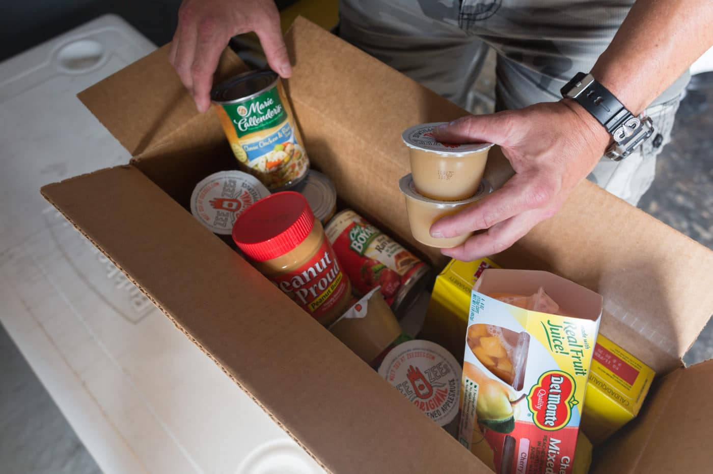

Welcome to Food Bank Distribution App
What Does Food bank distribution app Do?
Food bank distribution app as a food bank in Malaysia is a non-profit governmental organization (NGO) incorporated on 2021 that is where manufacturers, distributors, wholesaler, retailers, companies or people can donate their foods which will then be collected and distributed to charitable/welfare homes, volunteer welfare organisation, refugees community, poor families, destitute and soup kitchen.

About Us
We aim to rescue surplus food from the manufacturer, wholesaler, hypermarket and hotel industry; sort and re-distribute it to the identified targeted B40 communities, charity home and welfare center through our strategic partners to reduce food waste and to help to ease and lessen the cost of living of the underprivileged Malaysian.